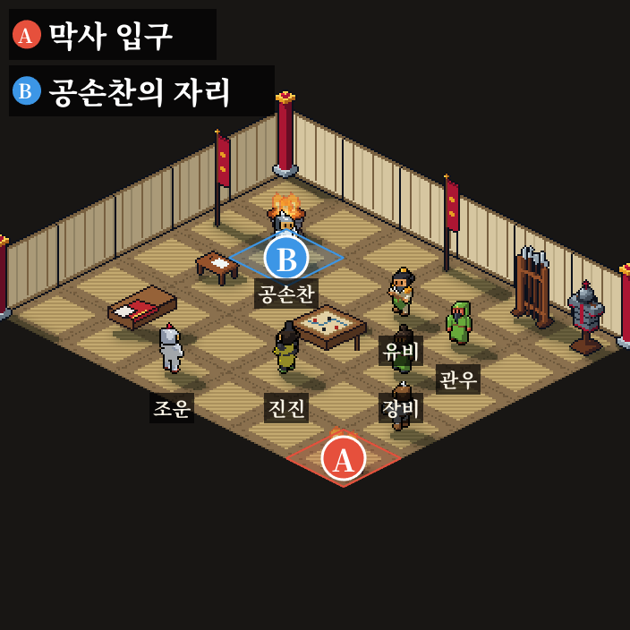
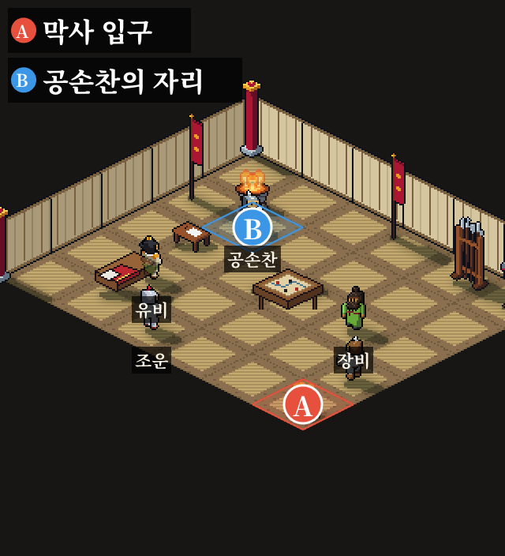
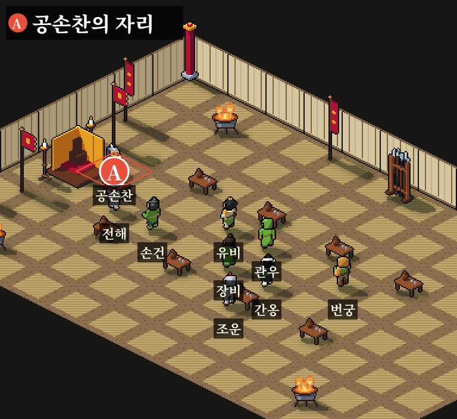
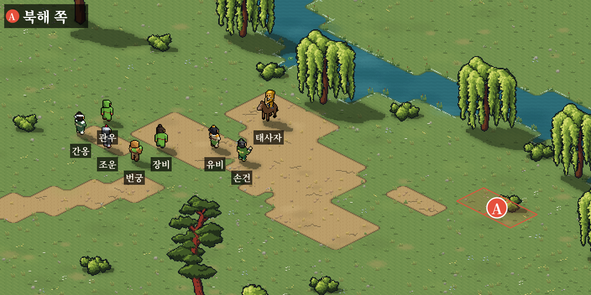
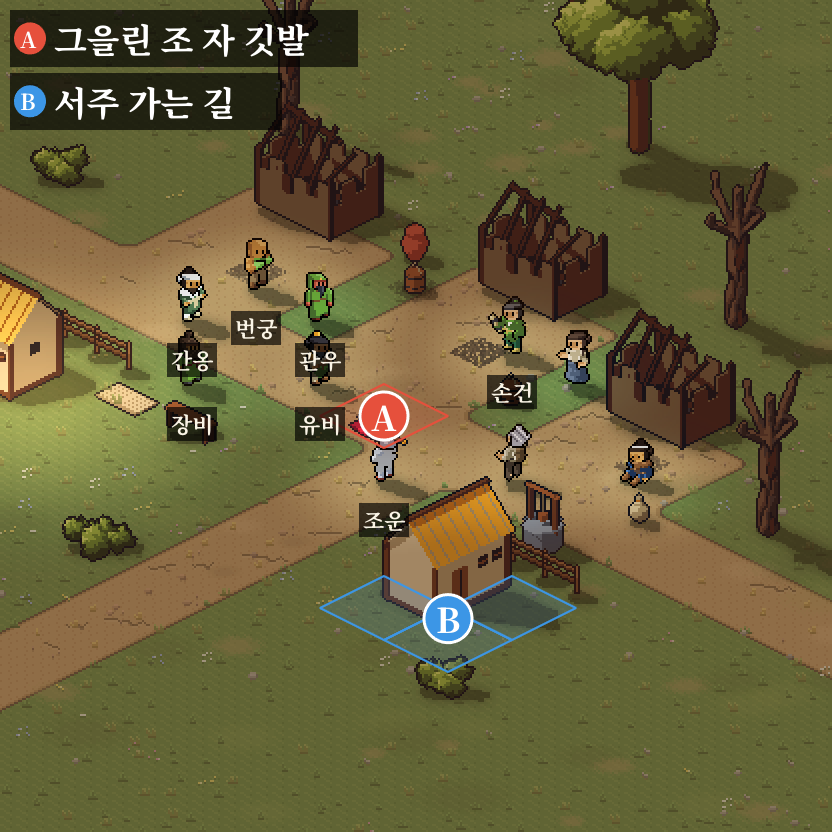
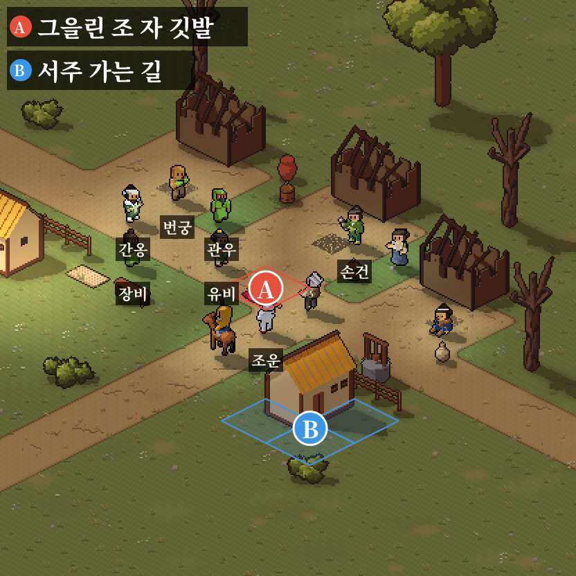

<title>11·12장 구현안</title>
<meta name="claude:viewport-fit-sides" content="cover">
<link rel="preconnect" href="https://fonts.googleapis.com">
<link rel="stylesheet" href="https://fonts.googleapis.com/css2?family=Gowun+Batang:wght@400;700&family=IBM+Plex+Sans+KR:wght@400;500;600&display=swap">
<style>
/* layout: one reading column; renders run full column width, tables scroll in their own box */
:root{
  --bg:#f3f4f2; --panel:#ffffff; --fg:#1d2124; --muted:#5d666c; --line:#d5d9d6;
  --accent:#2d5b7a; --enemy:#9b2f24; --ally:#2f6b45; --note:#8a6a12;
  --display:"Gowun Batang","Noto Serif KR",serif;
  --body:"IBM Plex Sans KR","Apple SD Gothic Neo","Malgun Gothic",sans-serif;
}
@media (prefers-color-scheme: dark){:root:not([data-theme="light"]){
  --bg:#15191c; --panel:#1d2327; --fg:#e4e8e6; --muted:#9aa4a9; --line:#323b40;
  --accent:#7fb0d3; --enemy:#e07a6c; --ally:#79c08f; --note:#d9b44a; color-scheme:dark}}
:root[data-theme="dark"]{
  --bg:#15191c; --panel:#1d2327; --fg:#e4e8e6; --muted:#9aa4a9; --line:#323b40;
  --accent:#7fb0d3; --enemy:#e07a6c; --ally:#79c08f; --note:#d9b44a; color-scheme:dark}
body{background:var(--bg);color:var(--fg);font-family:var(--body);font-size:15px;line-height:1.7;
  padding-left:max(16px,env(safe-area-inset-left,0px));padding-right:max(16px,env(safe-area-inset-right,0px));padding-block:32px 64px}
main{max-width:980px;margin:0 auto;display:flex;flex-direction:column;gap:40px}
h1,h2,h3{font-family:var(--display);text-wrap:balance;line-height:1.3;margin:0}
h1{font-size:2rem} h2{font-size:1.5rem;border-bottom:2px solid var(--fg);padding-bottom:6px} h3{font-size:1.15rem}
p{margin:0;max-width:68ch}
section{display:flex;flex-direction:column;gap:16px}
.lede{color:var(--muted)}
.tag{display:inline-block;font-size:.75rem;letter-spacing:.04em;padding:1px 8px;border-radius:3px;border:1px solid currentColor;margin-right:6px;vertical-align:2px}
.tag.new{color:var(--accent)} .tag.keep{color:var(--muted)} .tag.ask{color:var(--note)}
figure{margin:0;display:flex;flex-direction:column;gap:6px}
figure img{width:100%;height:auto;border:1px solid var(--line);image-rendering:pixelated;background:#222}
figcaption{font-size:.85rem;color:var(--muted)}
.shots{display:grid;grid-template-columns:repeat(auto-fit,minmax(min(100%,420px),1fr));gap:14px}
.script{background:var(--panel);border:1px solid var(--line);padding:14px 18px;display:flex;flex-direction:column;gap:6px}
.script .d{color:var(--muted);font-size:.9rem}
.script b{font-weight:600;color:var(--accent)}
.wrap{overflow-x:auto}
table{border-collapse:collapse;width:100%;font-size:.9rem;min-width:560px}
th,td{border-bottom:1px solid var(--line);padding:6px 8px;text-align:left;vertical-align:top}
th{font-weight:600;color:var(--muted);font-size:.8rem;letter-spacing:.03em}
.e{color:var(--enemy);font-weight:600} .a{color:var(--ally);font-weight:600}
ol.q{margin:0;padding-left:1.4em;display:flex;flex-direction:column;gap:10px}
ul{margin:0;padding-left:1.2em}
.chap{font-family:var(--display);font-size:.95rem;color:var(--accent)}
code{font-size:.85em;background:var(--panel);border:1px solid var(--line);padding:0 4px}
</style>

<main>
<header style="display:flex;flex-direction:column;gap:10px">
  <span class="chap">한실중흥 · 2부 하북 → 서주</span>
  <h1>11·12장 구현안</h1>
  <p class="lede">fullstory.md의 11장(서주의 구원 요청 · 북해 전투)과 12장(불탄 마을 · 서주 전투) 개요를 장면과 전투맵으로 옮긴 안입니다. 게임 데이터에는 아직 넣지 않았습니다. 모든 그림은 게임 렌더러로 그렸고, 원본은 <code>ver5/plan/ch11_12/</code>에 있습니다. 대사는 줄거리를 보이기 위한 초안이며, 확정 대본은 S#마다 하나씩 따로 보여 드리고 승낙을 받겠습니다.</p>
</header>

<section>
  <h2>흐름</h2>
  <div class="wrap"><table>
    <tr><th>장</th><th>장면</th><th>맵</th><th>무엇이 바뀌나</th></tr>
    <tr><td>11</td><td>S#1 계교 강가, 밤 <span class="tag keep">구현됨</span></td><td>S_gongsun_camp</td><td>백마, 조운이 곁에 남음</td></tr>
    <tr><td>11</td><td>S#2 원소의 사자 진진</td><td>S_tent_mid(공손찬의 막사)</td><td>조롱 편지 → 칼을 뽑은 공손찬을 유비가 막고 관우가 진진을 데리고 나감 → 공손찬이 화친을 정하고 유비에게 인수를 줌(18장 복선)</td></tr>
    <tr><td>11</td><td>해설 · 화친, 북평으로</td><td>—</td><td>몇 차례 교섭 끝에 화친. 공손찬과 함께 북평으로 돌아감</td></tr>
    <tr><td>11</td><td>S#3 북평 · 공손찬의 부중</td><td>S_council 재사용</td><td>서주목 도겸의 막료 손건이 구원을 청함. 손건이 길잡이로 동행(합류는 13장)</td></tr>
    <tr><td>11</td><td>탐험 · 북평 성 안</td><td>S_castle_town 재사용</td><td>궁병·무도가 승급, 부관 임명을 알려 주는 사람들. 관우에게 출진</td></tr>
    <tr><td>11</td><td>S#4 북해로 가는 길</td><td>들판 길(전투 흔적을 지운 사본)</td><td>길을 가던 중 태사자가 말을 몰고 와 공융의 구원 요청을 전함</td></tr>
    <tr><td>11</td><td><b>B11 북해 전투</b></td><td>새 맵 16×15</td><td>여울 건너기, 뒤에서 황건 증원. 조운 대 관해. 부목표 태사자 생존 → 인수</td></tr>
    <tr><td>12</td><td>S#1 북해성 문 앞</td><td>S_castle_out 재사용</td><td>공융의 감사, 태사자의 작별</td></tr>
    <tr><td>12</td><td>S#2 불탄 마을</td><td>S_village_burnt 재사용</td><td>그을린 조(曹) 자 깃발. 조조가 아버지의 원수를 갚는다며 서주를 짓밟는 중</td></tr>
    <tr><td>12</td><td>탐험 · 불탄 마을</td><td>S_village_burnt</td><td>생존자 대사, 종군 상인, 관우에게 출진</td></tr>
    <tr><td>12</td><td><b>B12 서주 전투</b></td><td>새 맵 24×22</td><td>피난민 호위. 갈림길 둘: 「고순 가족 생존」, 「제갈현 생존」+육도</td></tr>
  </table></div>
</section>

<section>
  <h2>11장 · 서주의 구원 요청</h2>

  <h3>S#2 원소의 사자 (공손찬의 막사) <span class="tag new">고침</span></h3>
  <div class="shots">
    <figure><figcaption>① 공손찬이 (B) 자리에서 편지를 읽음. 진진은 (A) 입구 쪽, 삼형제는 탁자 옆</figcaption></figure>
    <figure><figcaption>② 공손찬이 칼을 뽑고 다가섬. 유비가 사이로 들어선 뒤 관우 쪽을 보며 말풍선 「……」(정지 그림이라 말풍선은 안 보임)</figcaption></figure>
    <figure><figcaption>③ 관우가 진진 곁으로 와서 쉴 곳으로 안내함</figcaption></figure>
    <figure><figcaption>④ 관우·진진이 (A)로 나간 뒤, 공손찬이 자리에 앉고 유비가 탁자 앞에 섬</figcaption></figure>
  </div>
  <div class="script">
    <span class="d">진진이 원소의 화친 편지를 바친다. 공손찬이 자리에서 펼쳐 읽다 얼굴이 굳는다.</span>
    <span><b>공손찬</b> "……백마가 계수를 건너는 모습이 참으로 볼 만했다고? 다음엔 물에 빠지지 않게 조심하라고?"</span>
    <span><b>진진</b> "장군, 소인은 화친의 글이라고만 들었습니다. 봉인을 뜯어 본 적이—"</span>
    <span class="d">공손찬이 칼을 뽑아 들고 걸어 나온다. 유비가 그 앞으로 들어선다.</span>
    <span><b>유비</b> "형님, 칼을 거두십시오. 사자를 베면 화친을 깬 사람은 형님이 됩니다."</span>
    <span class="d">유비가 공손찬을 막아선 채 고개만 돌려 관우를 본다. 머리 위에 말풍선 「……」.</span>
    <span><b>관우</b> (진진 곁으로 가서) "먼 길 오셨소. 사자께서 쉬실 곳으로 모시겠소."</span>
    <span class="d">관우가 진진을 데리고 막사 밖으로 나간다. 공손찬이 칼을 거두고 자리로 돌아가 털썩 앉는다.</span>
    <span><b>공손찬</b> "원본초 이놈……. 화친을 하자면서 나를 비웃고, 내가 사자를 베면 화친을 깬 놈으로 만들고. 양쪽으로 나를 갖고 놀았어."</span>
    <span><b>공손찬</b> "……머리가 좀 식으니 정신이 드는군. 백마의종이 반이나 꺾였다. 지금은 화친하고 군사를 추스를 때다."</span>
    <span><b>공손찬</b> "사자에게는 내가 화친을 받아들인다고 전하겠다."</span>
    <span><b>유비</b> "좋은 결정이십니다, 형님."</span>
    <span><b>공손찬</b> "……아까는 네 덕에 원본초 손에 놀아나지 않았다. 이거나 받아 둬라." → <b>중급 인수</b></span>
  </div>
  <p>진진은 여기서 일부러 살려 둡니다. 18장에서 원소에게 몸을 의탁한 유비의 편지를 조조 밑의 관우에게 전하는 사자가 되고, 원소의 흉계를 알려 유비를 빼낸 뒤 합류합니다. 연의에서도 유비의 편지를 관우에게 전한 사람이 진진이고, 정사의 진진은 유비를 섬겨 촉의 신하가 됩니다. 지금 <code>characters_story.json</code>의 진진은 "국의와 함께 쇠뇌 부대를 맡는 장수"로 되어 있어, 합류할 문관(학자 계열)으로 고쳐야 합니다.</p>

  <div class="script"><span class="d">해설: 원소 진영과 몇 차례 사자가 오간 끝에 화친이 이루어졌다. 공손찬은 유비와 함께 북평으로 돌아갔다.</span></div>

  <h3>S#3 북평 · 공손찬의 부중 <span class="tag new">고침</span></h3>
  <div class="shots">
    <figure><figcaption>공손찬이 (A) 상석에 앉아 있고, 손건이 들어와 고개를 숙임. 연합 회의장 맵(S_council) 재사용</figcaption></figure>
  </div>
  <div class="script">
    <span><b>손건</b> "서주목 도겸 공의 막료, 손건이라 하옵니다."</span>
    <span><b>손건</b> "조조가 아비의 원수를 갚는다며 서주로 쳐들어왔습니다. 사군께서는 팽성에서 잔을 나누신 공손 장군의 의리를 믿고 구원을 청하라 하셨습니다."</span>
    <span><b>공손찬</b> "화친은 했다만 원본초는 믿을 놈이 못 된다. 나는 북평을 비울 수 없어. 현덕, 네가 가라. 자룡도 데려가고."</span>
    <span><b>유비</b> "팽성에서 도 사군께 받은 곡식 값을 갚을 때가 됐군요."</span>
    <span><b>손건</b> "서주까지는 제가 길을 안내하겠습니다. 청주를 지나 북해를 거쳐 가는 길입니다. 북해는 제 고향이라 길이 훤합니다."</span>
  </div>
  <p>손건은 이름만 밝히고 자는 말하지 않습니다(낮은 사자가 장군 앞에서 하는 소개). 도겸은 이 무렵 서주목이고, 그 뒤로는 "사군"으로 부릅니다. 손건은 길잡이로 동행하며 출전하지 않고, 13장 서주 계승에서 합류합니다. 이 원칙은 루트 <code>AGENTS.md</code>의 이야기 쓰기 항목에 적었습니다.</p>

  <h3>탐험 · 북평 성 안 <span class="tag new">추가</span></h3>
  <div class="shots">
    <figure><figcaption>관우(관아 앞)에게 말하면 출진. 신도성 맵(S_castle_town)을 재사용한 시안이라, 북평다운 맵이 필요하면 사본을 따로 만듭니다</figcaption></figure>
  </div>
  <div class="wrap"><table>
    <tr><th>누구</th><th>대사 초안</th></tr>
    <tr><td>궁병 군관</td><td>"궁병이 인수를 받으면 노병이 됩니다. 쇠뇌는 활보다 한 칸 더, 네 칸까지 날아가지요. 계교 다리 머리에서 국의의 노병 맛을 보셨을 겁니다."</td></tr>
    <tr><td>무술 사범</td><td>"맨주먹 무도가도 인수를 받으면 권사가 됩니다. 철 장갑을 끼고 연타를 퍼붓지요. 주먹은 피하고 되받아치는 데서 시작합니다."</td></tr>
    <tr><td>공손찬의 막료</td><td>"한 단계 위 병종이 된 장수는 '부관임명'을 익힐 수 있습니다. 부관은 따로 나가 싸우지 않고 주장 곁에 서서, 주장에게 모자란 재주를 메워 줍니다. 주장이 싸우는 걸 보며 부관도 함께 자라고요."</td></tr>
    <tr><td>관우</td><td>출진</td></tr>
  </table></div>
  <p><b>게임에 반영함:</b> 계교 직전 공손찬 진영(<code>explore10.json</code>)에 보병 군관(경보병 → 중보병·장창병)과 백마의종 기병(경기병 → 중기병·궁기병)을 넣었고(둘 다 끝에 "고유 조형 장수는 갈래가 정해져 있다: 유비는 중보병, 관우·장비·조운은 중기병"을 덧붙임), 신도성(<code>explore09.json</code>) 번궁의 첫 대사로 "나는 몸이 날래오. 상대의 공격을 흘려 피하고, 그 틈에 되받아치는 데는 자신이 있소."를 넣었습니다. 번궁의 말투(하오체)에 맞췄습니다.</p>

  <h3>S#4 북해로 가는 길 <span class="tag new">고침</span></h3>
  <div class="shots">
    <figure><figcaption>① 일행이 길을 가는 중에 태사자가 말을 몰고 다가옴. 팽성 들판에서 부러진 창·쓰러진 깃발·모닥불·거적을 지운 사본</figcaption></figure>
    <figure><figcaption>② 태사자가 말을 세우고, 유비와 손건이 앞으로 나섬</figcaption></figure>
  </div>
  <div class="script">
    <span><b>태사자</b> "길을 막아 송구하오. 혹시 평원의 유현덕 공이시오?"</span>
    <span><b>유비</b> "그렇소만."</span>
    <span><b>태사자</b> "동래 사람 태사자, 자는 자의요. 북해 공융 공께서 황건에게 에워싸여 계시오. 어머니께서 공께 입은 은혜를 갚으라 하셔서, 포위를 뚫고 구원을 청하러 나왔소."</span>
    <span><b>유비</b> "문거 공께서……. 연합 진영에서 뵌 분이오. 서주로 가는 길이 북해를 지나니, 함께 갑시다."</span>
    <span><b>손건</b> "성을 에워싼 건 관해의 무리입니다. 성 동쪽에 진채를 세웠다고 들었습니다."</span>
  </div>
</section>

<section>
  <h2>B11 북해 전투 <span class="tag new">고침</span></h2>
  <figure><figcaption>16×15. 위쪽 노란 숫자는 X, 왼쪽 파란 숫자는 Y. 이름표 초록은 AI 아군, 빨강은 적 장수. 파란 마름모는 닫힌 성문. Lv 기준 18</figcaption></figure>
  <p>남쪽 모퉁이 길 → 길가의 성 (12,11) → 길 → 여울 (10~11, 7~8) → 길 → 황건 → 북동쪽 북해성. 성벽 줄은 y=3, 닫힌 성문은 (7,3)입니다. 성벽 양끝이 맵 밖으로 이어져 보이는 것은 맵 가장자리 칸을 바깥으로 늘여 그리는 규칙 때문이고, 성 안 거리가 이어진다고 읽히면 그대로 두고, 어색하면 맵 바깥 장식을 손보겠습니다.</p>
  <div class="wrap"><table>
    <tr><th>무엇</th><th>자리</th><th>메모</th></tr>
    <tr><td>유비군 출전 칸 7</td><td>남쪽 모퉁이 (12~15, 12~14)</td><td>최대 6, 필수: 유비·관우·장비·조운</td></tr>
    <tr><td class="a">태사자</td><td>(13,12)</td><td>처음부터 공격(AI). 북해 쪽으로 달려감</td></tr>
    <tr><td class="a">공융 + 북해병 둘</td><td>성 안 (6~8, 1~2)</td><td>성문이 닫혀 있어 나오지 않음</td></tr>
    <tr><td class="e">관해 (대장)</td><td>성문 앞 진채 (8,5)</td><td>조운과 일기토</td></tr>
    <tr><td class="e">성문 앞 황건 넷</td><td>(5~9, 4~6)</td><td>지킴. 증원이 오면 공격</td></tr>
    <tr><td class="e">강둑 궁병 둘 · 여울 앞 황건 둘</td><td>(9,5) (12,5) · (10,6) (12,6)</td><td>react. 여울을 건너는 쪽을 맞음</td></tr>
    <tr><td class="e">증원 황건 다섯</td><td>남동쪽 끝 구릉 (14~15, 9~11)</td><td>강 북쪽(y 0~6)에 아군이 있는 채로 적 차례가 오면 나와서 공격</td></tr>
  </table></div>
  <ul>
    <li>승리: 관해를 물리친다. 패배는 기본(유비 퇴각)만</li>
    <li>부목표: 태사자가 살아남는다 → 전투 뒤 태사자가 <b>인수</b>를 선물로 줌</li>
    <li>증원이 나올 때 관해: "오, 동료들이 더 왔구나! 저놈들 등을 쳐라!" 길가의 성에 한둘을 남겨 두면 증원이 여울로 오는 길을 막을 수 있습니다.</li>
    <li>일기토: 조운 대 관해(관해 퇴각)</li>
  </ul>
</section>

<section>
  <h2>12장 · 불탄 마을</h2>

  <h3>S#1 북해성 문 앞</h3>
  <div class="shots">
    <figure><figcaption>공융·태사자가 다리를 건너 나와 일행과 마주 섬</figcaption></figure>
  </div>
  <div class="script">
    <span><b>공융</b> "옛말에 이르기를, 어려울 때 온 벗이 참된 벗이라 하였소. 현덕 공께 큰 빚을 졌구려."</span>
    <span>〔부목표 달성〕 <b>태사자</b> "포위를 뚫을 때 공융 공께 받은 것이오. 내게는 과분하니, 공의 장수에게 쓰시오." → 인수</span>
    <span><b>태사자</b> "어머니께 은혜를 갚았다 말씀드릴 수 있게 되었소. 다음에 만날 때는 이 화살로 빚을 갚겠소."</span>
    <span class="d">태사자가 말을 돌려 떠난다. 손건이 남쪽을 가리킨다.</span>
  </div>
  <p>이 맵은 앞마당이 두 줄이라 아홉 명이 서면 빽빽합니다. 넣을 때는 S_castle_out의 앞마당을 넓힌 사본을 만들거나, 손건·번궁을 화면 밖에서 늦게 들이겠습니다.</p>

  <h3>S#2 불탄 마을 (해 질 녘)</h3>
  <div class="shots">
    <figure><figcaption>① 유비가 (A) 그을린 조 자 깃발 앞에 멈춤. 연기와 잔불, 주저앉은 부상자</figcaption></figure>
    <figure><figcaption>② 노인이 다가와 사정을 말하고, (B) 서주 가는 길에서 정찰병이 달려 들어옴</figcaption></figure>
  </div>
  <div class="script">
    <span class="d">유비가 그을린 깃발 앞에 멈춘다. 깃발에 조(曹) 자가 반쯤 타 남았다.</span>
    <span><b>장비</b> "형, 이거…… 조맹덕 깃발 아니유?"</span>
    <span><b>노인</b> "조 장군의 아버님이 서주 땅에서 도적에게 목숨을 잃었답니다. 그 원수를 갚는다고, 지나는 고을마다……"</span>
    <span><b>손건</b> "도 사군의 부하였던 장개가 저지른 일입니다. 사군께선 아시고 땅을 치셨지만……"</span>
    <span><b>유비</b> "……맹덕 공."</span>
    <span><b>관우</b> (말없이 깃발을 접어 노인에게 건넨다)</span>
    <span><b>정찰병</b> "남쪽 길에 서주성으로 가는 피난민 행렬이 있습니다! 조조군 기병이 뒤를 쫓고 있습니다!"</span>
    <span><b>손건</b> "고순 장군도 팽성 사람들을 데리고 그 길로 오는 중입니다."</span>
  </div>
  <p>8장 벼랑에서 "천하가 나를 버리는 일은 없을 것"이라 한 조조가 그 말대로 움직인 결과를 유비가 처음 봅니다. 조조는 화면에 나오지 않고 깃발과 백성의 말로만 닿습니다. 손건의 마지막 줄이 B12 갈림길 1(고순)의 동기를 미리 깔아 둡니다.</p>
</section>

<section>
  <h2>B12 서주 전투</h2>
  <figure><figcaption>24×22. 북쪽 모퉁이에서 남쪽 서주성(20,19)까지 내려가는 피난길. 개울 다리(13,14~15), 서쪽 여울(2~3,14). 파란 마름모는 「고순의 마을」. Lv 기준 20</figcaption></figure>
  <div class="wrap"><table>
    <tr><th>무엇</th><th>자리</th><th>메모</th></tr>
    <tr><td>유비군 출전 칸 7</td><td>북쪽 모퉁이 (1~3, 0~2)</td><td>최대 6, 필수: 유비·관우·장비·조운</td></tr>
    <tr><td class="a">피난 수레 + 백성 셋</td><td>길 위 (8~9, 6~8)</td><td>서주성으로 도망(flee). 성에 닿으면 맵을 빠져나감</td></tr>
    <tr><td class="a">고순 + 팽성 사람 둘</td><td>동쪽 마을 (20,9)</td><td>마을을 지킴(hold). 2턴에 도움을 청함</td></tr>
    <tr><td class="a">선비</td><td>서쪽 대숲 (2,11)</td><td>숨어 있음. 아군 장수가 옆에 닿으면 서주성으로 피난 시작</td></tr>
    <tr><td class="e">우금 (대장) + 보병 둘</td><td>동쪽 (21,4)</td><td>4턴부터 공격. 장비와 일기토</td></tr>
    <tr><td class="e">추격 기병 셋</td><td>(11~13, 2~4)</td><td>1턴부터 피난민을 쫓음</td></tr>
    <tr><td class="e">마을 습격조 셋</td><td>(17, 7~11)</td><td>2턴부터 고순의 마을을 침</td></tr>
    <tr><td class="e">사냥조 셋 <span class="tag new">3턴 증원</span></td><td>서쪽 가장자리 (0~1, 7~8)</td><td>대숲 쪽으로 옴</td></tr>
    <tr><td class="e">다리 건너 둘</td><td>(11,17) (15,17)</td><td>react. 성 앞에서 피난민을 막음</td></tr>
  </table></div>
  <ul>
    <li>승리: 우금을 물리친다 · 패배: 피난 수레가 성에 닿지 못하고 쓰러진다</li>
    <li>갈림길 1(부목표): 고순과 팽성 사람이 하나라도 살아남는다 → <code>flag-gaoshun-family</code>. 13장에서 고순이 유비를 따르는 조건</li>
    <li>갈림길 2(부목표): 선비가 서주성으로 들어간다 → <code>flag-zhugexuan</code> + <b>육도</b>. 장판파 가상모드 조건의 절반</li>
    <li>병력을 셋으로 나누게 됩니다: 수레를 지키는 쪽, 동쪽 마을로 가는 쪽, 서쪽 대숲으로 가는 쪽. 다 챙기려면 조운·장비처럼 빠른 장수를 갈라 보내야 합니다.</li>
    <li>일기토: 장비 대 우금(우금 퇴각) <span class="tag ask">확인 필요</span> 연의 11회에서 유비·장비가 조조 진채를 뚫고 서주성에 들 때 막아선 장수를 우금으로 기억하고 있으나, 원문으로 아직 확인하지 못했습니다. 넣기 전에 확인하고, 다르면 그 장수로 바꾸겠습니다.</li>
  </ul>
  <div class="script">
    <span class="d">전투 대사 초안</span>
    <span><b>우금</b> "주공의 영이다. 서주 사람은 하나도 성에 들이지 마라."</span>
    <span><b>유비</b> "백성들을 서주성까지 보낸다! 운장, 익덕, 기병부터 막아라!"</span>
    <span><b>고순</b>(2턴) "현덕 공. ……이 마을에 팽성 사람들이 있소."</span>
    <span><b>선비</b>(3턴, 말풍선) "얘들아, 고개를 들지 마라. ……숨소리도 내지 말고."</span>
    <span><b>선비</b>(구출) "고맙소. ……이름은 묻지 말아 주시오. 아이들을 성까지만 데려가면 되오."</span>
  </div>
  <p>선비가 데리고 있는 "아이들"은 어린 제갈량 형제입니다. 정사에서 제갈현은 조조의 서주 공격 무렵 조카들을 데리고 서주를 떠났습니다. 이름은 끝까지 밝히지 않아, 아는 사람만 알아보게 둡니다. 아이 도트가 없어서 지금은 말로만 나오고, 아이를 그림으로 보일지는 아래에서 여쭙니다.</p>
</section>

<section>
  <h2>새로 필요한 것</h2>
  <div class="wrap"><table>
    <tr><th>무엇</th><th>재사용 안</th><th>새로 그릴 것</th></tr>
    <tr><td>태사자</td><td>궁기병(horse_archer) 시트에 머리 교체</td><td>전투 도트·초상(수묵 담채)</td></tr>
    <tr><td>관해</td><td>황건 두목처럼 bandit 시트에 색만</td><td>초상</td></tr>
    <tr><td>우금</td><td>중보병 시트, 위 진영색</td><td>전투 도트 머리·초상</td></tr>
    <tr><td>선비(제갈현)</td><td>문관 비전투(official_noncombat)</td><td>전투용은 학자 시트에 머리만</td></tr>
    <tr><td>손건</td><td>인물 데이터·초상 있음, 비전투 도트 없음(11장부터 장면에 나옴)</td><td>비전투 도트(civ3d)</td></tr>
    <tr><td>진진</td><td>문관 비전투, 원소 진영색</td><td>인물 설명을 사자로 고침</td></tr>
    <tr><td>피난 수레</td><td>약탈 수레(전차 시트)를 서주 쪽 색으로</td><td>없음</td></tr>
    <tr><td>아이 둘</td><td>없음(대사로만)</td><td>원하시면 아이 비전투 도트</td></tr>
    <tr><td>아이템</td><td>인수(있음), 육도</td><td>육도 아이콘(item-icon)</td></tr>
    <tr><td>전투맵 둘</td><td>지형 타일은 기존 것</td><td>불탄 마을 칸이 렌더에서 멀쩡한 마을로 보임. 넣을 때 불탄 마을 그림이 나오는지 확인</td></tr>
  </table></div>
</section>

<section>
  <h2>정해 주실 것</h2>
  <ol class="q">
    <li><b>북해 전투 일기토.</b> fullstory대로 조운 대 관해로 갈까요, 연의대로 관우 대 관해로 갈까요?</li>
    <li><b>서주 전투의 적장.</b> 우금(확인 후)으로 할까요, 아니면 하후돈이 아닌 다른 조조 쪽 장수를 원하시나요? fullstory는 조조 쪽 장수 일화를 하후돈만 두기로 했고, 서주 학살에 하후돈을 세우면 그 관계가 어두워져서 피했습니다.</li>
    <li><b>어린 제갈 형제를 그림으로 보일지.</b> 보인다면 아이 비전투 도트를 새로 그려야 합니다.</li>
    <li><b>북평 맵.</b> 성 안 탐험을 신도성 맵으로 그대로 쓸지, 북평용 사본(성벽·깃발 색, 배치)을 만들지 정해 주세요.</li>
  </ol>
</section>
</main>
